Anagrafiche
Atleti, staff, squadre, campi, stagioni, campionati e configurazioni della società.
PIATTAFORMA GESTIONALE INTEGRATA
eEssential collega organizzazione, attività sportiva, gare, risultati, report, amministrazione e logistica in un unico ambiente web.
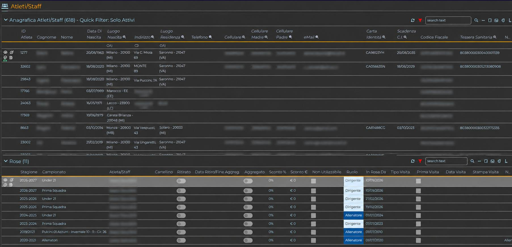
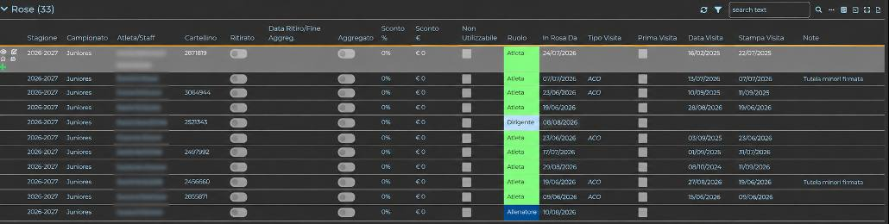
IL MODELLO eESSENTIAL
La piattaforma riunisce in un unico ambiente i principali flussi di una società calcistica, collegando dati anagrafici, organizzazione sportiva, attività quotidiana, gare, risultati e funzioni di controllo.
Atleti, staff, squadre, campi, stagioni, campionati e configurazioni della società.
Rose, allenamenti, presenze, convocazioni, formazioni, gare e statistiche.
Preiscrizioni, staging area, pagamenti, visite e controlli operativi.
Articoli, ordini, movimentazioni, giacenze, kit e consegne.
SEGRETERIA SPORTIVA
eEssential collega le attività della segreteria con la gestione sportiva: dalla pianificazione della giornata alla convocazione degli atleti, dalla formazione alla distinta e alla consuntivazione dell'evento.
Giornata, data e ora, squadra avversaria, campo e informazioni operative della gara.
Selezione di atleti e dirigenti, ruolo e stato di convocazione in un'unica schermata.
Composizione della formazione e gestione della maglia, della barriera e dei corner.
Generazione del documento di gara con formazioni, sostituzioni, marcatori e ammonizioni/espulsioni.
Risultato, eventi e dati della partita diventano patrimonio dello storico e della reportistica.
CONTROLLO OPERATIVO
SEGRETERIA E CONTROLLO
La segreteria lavora sullo stesso patrimonio informativo dell'area sportiva, collegando rose, pagamenti, visite mediche e preiscrizioni.
Associazione degli atleti alle stagioni e ai campionati, ruolo, stato e storico della partecipazione.
Pagamenti collegati a stagione e campionato, stato della ricevuta e informazioni per la segreteria.
Date, tipologia, documentazione e controlli relativi alle visite mediche.
Raccolta dei dati nella Staging Area prima del passaggio nei processi gestionali.
AREA SPORTIVA
Le funzioni sportive seguono il ciclo operativo della squadra e collegano giornate, convocazioni, formazioni, distinta e risultati.
EVENTI PARTITA
La gestione può partire dalla giornata di campionato e arrivare alla consuntivazione dell'incontro, mantenendo collegati squadra, campo, convocati, formazione e dati di gara.
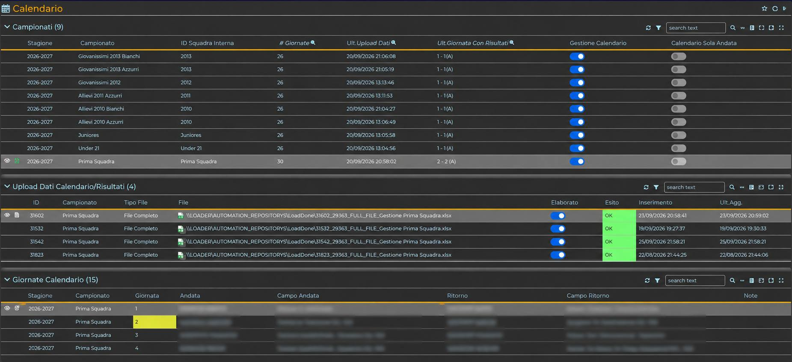
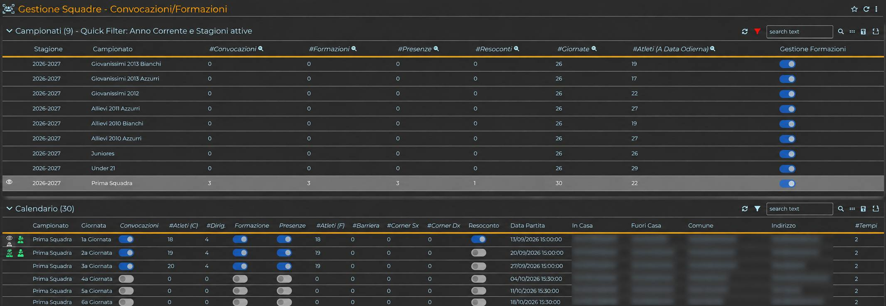
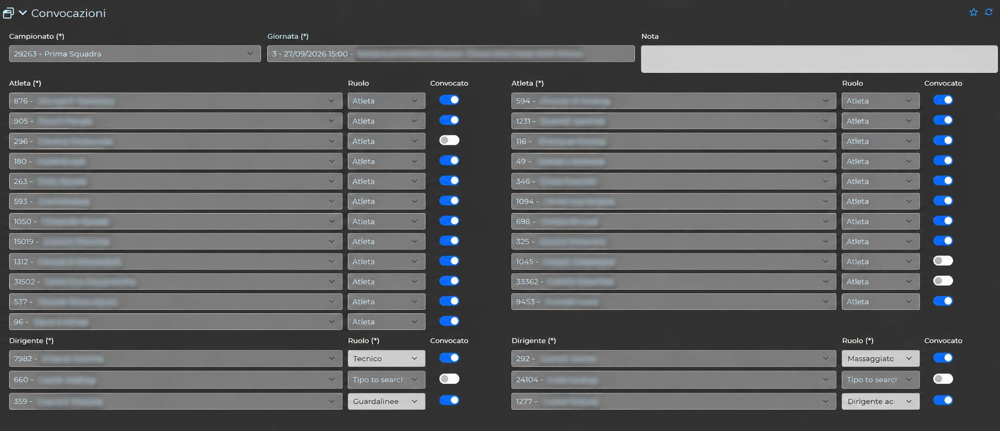
GESTIONE SPORTIVA
La struttura della squadra è collegata all'attività quotidiana, con una lettura immediata delle presenze e dello storico.
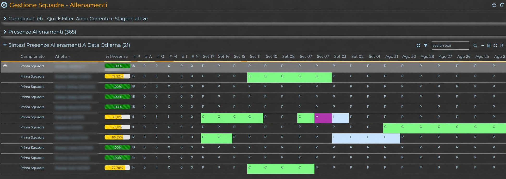
RISULTATI E STATISTICHE
Classifiche per giornata, risultati e minuti giocati alimentano viste di sintesi utili al controllo sportivo.
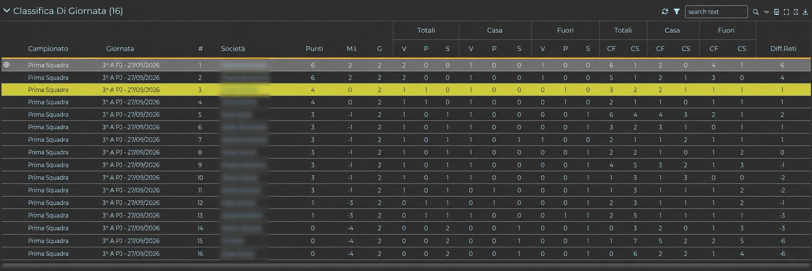
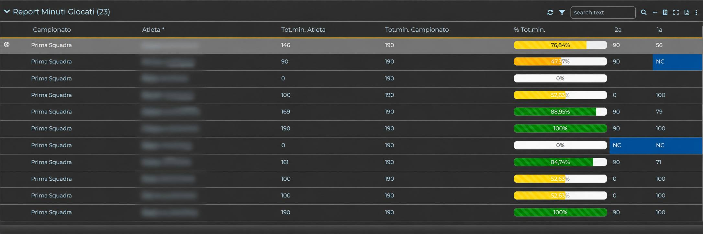
MAGAZZINO E LOGISTICA
Una gestione trasversale per controllare dotazioni, quantità, stato e consegne di atleti, staff e squadre.
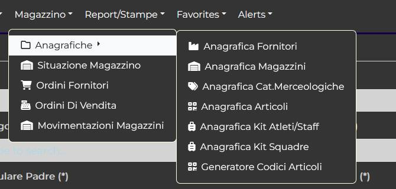
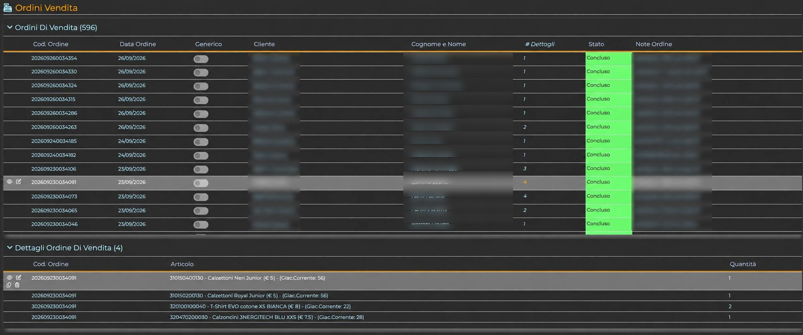
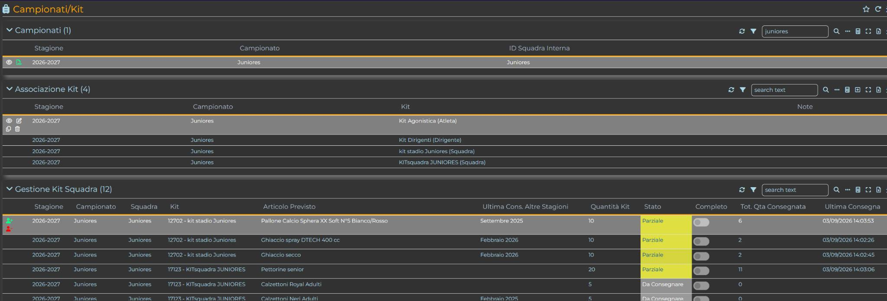
PARTITE, EVENTI E STATISTICHE
La pianificazione della gara è collegata agli eventi e ai dati che alimentano classifiche, minuti giocati e report.
Giornata, data, ora, campo, squadra di casa e squadra ospite.
Atleti e dirigenti associati alla giornata, con ruolo e stato.
Atleti associati alla gara e gestione dei numeri di maglia.
Formazioni, sostituzioni ed eventi disciplinari in un unico documento.
Marcatori, sostituzioni, ammonizioni ed espulsioni nella consuntivazione.
Risultati, classifiche e minuti giocati alimentati dai dati di gara.
DAL DATO ALLA LETTURA SPORTIVA
La stessa informazione di gara resta collegata a squadra, giornata e atleta, dalla gestione operativa alla reportistica.
PIATTAFORMA
Le pagine basate su tabelle condividono una logica uniforme: ricerca, filtri, totali, esportazione Excel e strumenti di gestione del record.
Refresh, filtri rapidi, ricerca testuale, filtri per colonna, totali, inserimento, zoom ed export Excel.
Pagina iniziale, preferiti, cronologia, tema chiaro/scuro, ordinamento menu e comportamento del doppio click.
Alert nell'interfaccia web e notifiche e-mail per eventi, scadenze e anomalie.
Utilizzo responsive su PC, tablet e smartphone, autenticazione a 2 fattori e posta configurabile.
ESPERIENZA E PROTEZIONE
eEssential è descritto nel materiale di prodotto come modulare e configurabile, con tema chiaro/scuro, pagina iniziale, preferiti, cronologia, posta della società e autenticazione a 2 fattori.
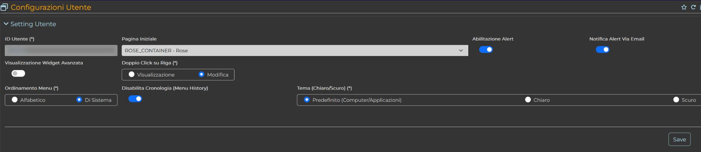
eESSENTIAL
Segreteria · Sport · Organizzazione · Amministrazione · Logistica · Controllo